ZK Bridge
Connect ZKTeco attendance devices to your ERP, HRM or payroll system. ZK Bridge collects punches from your devices in real time, sends them to your ERP's API, and keeps employee lists on the devices in sync.
Thank you for purchasing ZK Bridge. This guide covers everything from installation to connecting your first device. If you have a question that is not answered here, see Support.
How it works
← employees
← employee list
ZK Bridge runs on a computer in the same network as your devices. Your ERP can be anywhere, including the cloud, because the bridge only makes outgoing HTTPS requests to it. Your ERP needs just three small API endpoints (see ERP integration).
Features
Requirements
| Item | Requirement |
|---|---|
| Operating system | Windows 10 / 11 / Server 2016+, or Linux (Ubuntu 20.04+, Debian 11+, or any systemd distro). macOS works for testing. |
| Node.js | Version 20 or newer (the LTS version from nodejs.org is recommended). |
| Hardware | Any PC or small server that stays on. 1 CPU core and 512 MB free RAM are enough for dozens of devices. |
| Network | The computer must be reachable from your ZKTeco devices (same LAN or VPN), and must be able to reach your ERP's API. |
| Devices | ZKTeco devices with ADMS / Cloud Server support (push) or the standard TCP/IP port 4370 (pull). |
| ERP | Any system that can expose 3 HTTP JSON endpoints. Optional for first tests. |
Shared hosting is not supported. ZK Bridge is a long-running Node.js program that devices connect to, so it needs a PC, VPS or server where you can run programs — usually a computer in the same office as the devices.
Installation
Unzip the package to a permanent folder, for example C:\zk-bridge on Windows or /opt/zk-bridge on Linux. Avoid folders that sync to the cloud (OneDrive, Dropbox).
Windows
- Install Node.js 20 LTS or newer from nodejs.org (keep the default options).
- Open the ZK Bridge folder and double-click
start.bat. The first time, it installs the dependencies (about a minute), starts the server and opens your browser. - Complete the setup wizard in the browser.
- For permanent use, install it as a Windows service — see Run in the background.
Prefer the command line? Open Command Prompt in the folder and run:
npm install
npm startThen open http://localhost:3000.
Linux
- Install Node.js 20 or newer. On Ubuntu/Debian:
curl -fsSL https://deb.nodesource.com/setup_22.x | sudo -E bash - sudo apt-get install -y nodejs node -v - In the ZK Bridge folder, run:
npm install npm start - Open
http://<server-ip>:3000in a browser and complete the setup wizard. - For permanent use, run
./install-service.sh— see Run in the background.
Tip: npm install also creates the .env file, the data/ and logs/ folders, and a random session secret. You never need to copy or edit config files by hand.
Setup wizard
The first time you open ZK Bridge in a browser, a four-step setup wizard appears:
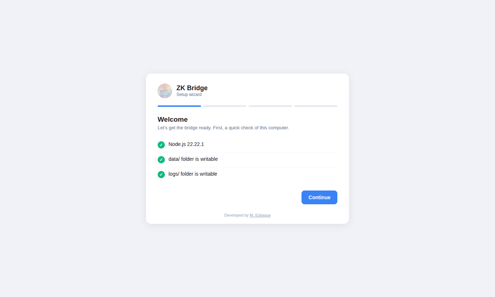
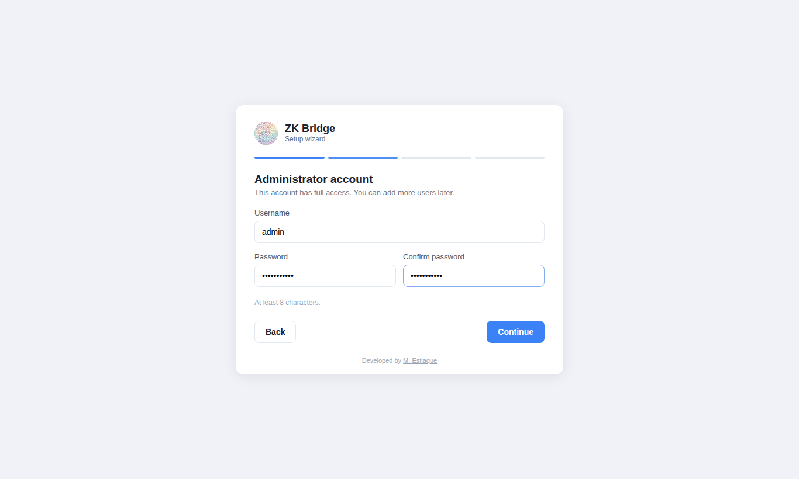
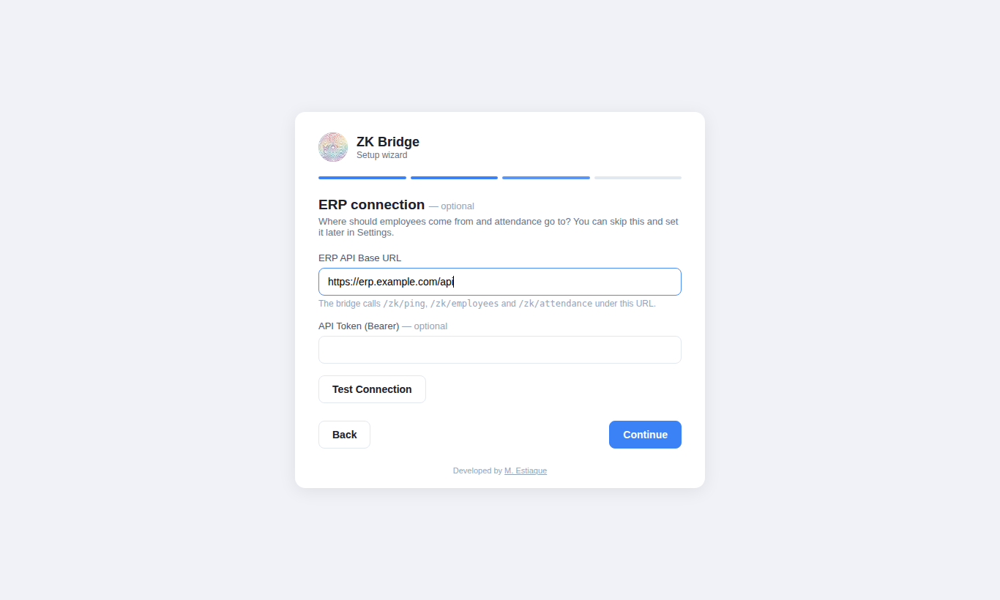
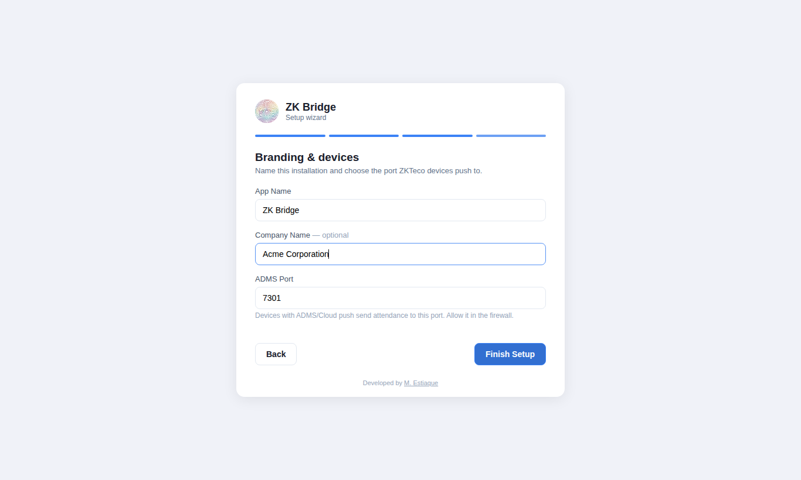
- System check — confirms the Node.js version and that the app can write to its folders.
- Administrator account — the first user, with full access. The password must be at least 8 characters.
- ERP connection — your API base URL and optional bearer token. Use Test Connection to check it, or Skip and set it later in Settings.
- App name & ADMS port — the name shown in the app, your company name, and the port devices push to (default
7788).
When you click Finish Setup you are signed in, and the last screen shows the address and port to enter on your devices.
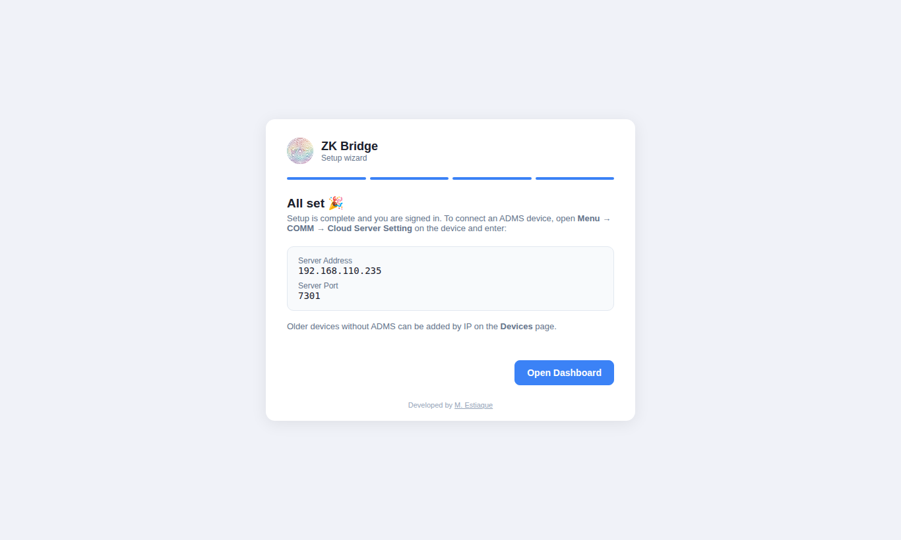
The wizard can only run once. After setup, the /install page is closed permanently.
Run in the background
For daily use, install ZK Bridge as a service. It then starts automatically when the computer boots, runs without anyone logged in, and restarts itself if it ever stops.
| Windows | Linux (systemd) | |
|---|---|---|
| Install service | Double-click install-service.bat (asks for Administrator rights) | ./install-service.sh (asks for sudo) |
| Remove service | uninstall-service.bat | ./uninstall-service.sh |
| Status | npm run service:status or Windows Services (“ZK Bridge”) | systemctl status zk-bridge |
| Service logs | src\daemon\*.log | journalctl -u zk-bridge -f |
Start / stop scripts
For quick, manual use there are one-click scripts:
| Windows | Linux | What it does |
|---|---|---|
start.bat | ./start.sh | Installs dependencies if needed, starts the server in the background and opens the browser. If the service is installed, it just makes sure it is running. |
stop.bat | ./stop.sh | Stops the server. |
ZK-Bridge.vbs | — | Same as start.bat but without a console window. |
Using PM2? If PM2 is installed globally, the start scripts use it automatically (ecosystem.config.js is included).
Connecting devices
ZK Bridge supports two connection types. Use ADMS whenever your device supports it — punches arrive instantly and the device does not need a fixed IP.
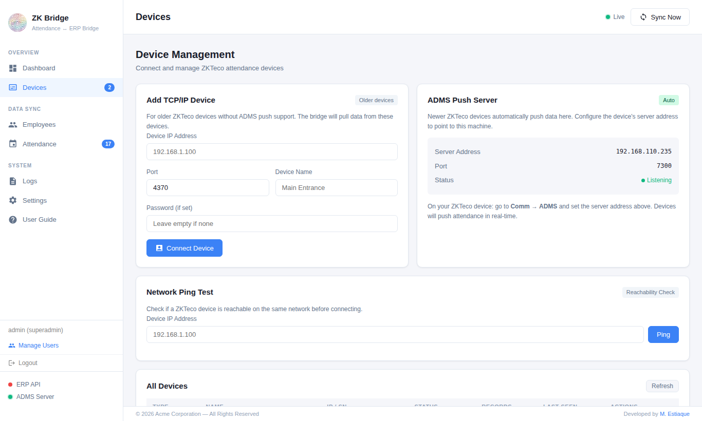
ADMS (push) devices
- Find the IP address of the computer running ZK Bridge. It is shown on the Devices page under ADMS Push Server, and on the last screen of the setup wizard.
- On the device, open Menu → COMM → Cloud Server Setting (on some models: Menu → Comm → ADMS).
- Set Server Address to the computer's IP (for example
192.168.1.10) and Server Port to the ADMS port (default7788). Turn Enable Domain Name and Proxy off. - Save and restart the device. Within a minute it appears on the Devices page with status connected.
Do not use localhost or 127.0.0.1 on the device — that points to the device itself. Use the computer's LAN IP, and give that computer a fixed IP (DHCP reservation) so devices can always find it.
You can change the ADMS port any time in Settings → ADMS Server Info. The change applies immediately; remember to update the port on each device.
TCP/IP (pull) devices
Older devices without ADMS are connected from the bridge side:
- Give the device a fixed IP address (Menu → COMM → Ethernet).
- On the Devices page, use Network Ping Test to check that the bridge can reach it.
- Under Add TCP/IP Device, enter the IP, port (default
4370), a name, and the device communication password if one is set. Click Connect Device. - Use Attendance → Fetch TCP, or Sync Now on the dashboard, to read punches from the device.
Firewall
Devices must be able to reach the ADMS port, and browsers the web port. Allow both on the computer running ZK Bridge.
Windows (run as Administrator)
netsh advfirewall firewall add rule name="ZK Bridge" dir=in action=allow protocol=TCP localport=3000,7788Linux (ufw)
sudo ufw allow 3000/tcp
sudo ufw allow 7788/tcpReplace 3000 and 7788 if you changed the ports.
ERP integration
ZK Bridge talks to your ERP through a small JSON API that you add to your system. It works with any language or framework — Laravel, CodeIgniter, Django, ASP.NET, Node.js and so on.
| Method | Path (under your API base URL) | Purpose |
|---|---|---|
GET | /zk/ping | Connection test (Settings → Test Connection) |
GET | /zk/employees | Employee list to put on the devices |
POST | /zk/attendance | Receives attendance punches |
With base URL https://erp.example.com/api, the bridge calls https://erp.example.com/api/zk/employees and so on. If your routes are different, enter full URLs in Settings → Fetch Employee URL and Sync Attendance URL; these override the default paths.
Authentication
If you set an API Token, every request includes Authorization: Bearer <token>. Requests also send Accept: application/json. Use HTTPS when your ERP is on the internet.
Ping
Any 2xx response means success. An optional message is shown to the user:
{ "message": "pong" }GET /zk/employees
Return a JSON array, or an object with the array in data:
{
"data": [
{ "uid": 1, "employee_id": "1001", "name": "Ayesha Rahman", "privilege": 0, "password": "" },
{ "uid": 2, "employee_id": "1002", "name": "Tanvir Hasan", "privilege": 0 }
]
}| Field | Required | Description |
|---|---|---|
uid | Yes | Numeric user slot on the device, 1–65535, unique and stable for each employee. If missing, the bridge uses the numeric part of id, employee_id or pin. |
employee_id | Recommended | The ID (PIN) employees use on the device and that comes back in attendance as employeeId. Falls back to pin, card_no, then uid. |
name | Recommended | Display name (devices show up to 24 characters). You may send first_name + last_name instead. |
privilege | No | 0 = normal user (default), 14 = device administrator. |
password | No | Device keypad password, if employees punch with a PIN code. |
POST /zk/attendance
The bridge sends all records that have not been delivered yet in one request, as { "records": [...] }:
{
"records": [
{
"deviceId": "CQZ7224460123",
"employeeId": "1001",
"time": "2026-10-10 08:42:04",
"status": "0",
"verify": "1",
"verifyMethod": "fingerprint",
"workCode": "0",
"source": "adms",
"receivedAt": "2026-10-10T02:42:05.120Z"
}
]
}| Field | Description |
|---|---|
employeeId | The employee's ID/PIN on the device (your employee_id). |
time | Punch time in the device's local time, YYYY-MM-DD HH:MM:SS. |
status | Punch state: 0 Check-In, 1 Check-Out, 2 Break-Out, 3 Break-In, 4 Overtime-In, 5 Overtime-Out. |
deviceId | Device serial number (ADMS) or ip:port (TCP/IP). |
source | adms or tcp. |
verify, verifyMethod | ADMS only: how the employee verified (fingerprint, face, card, password). |
workCode | ADMS only: work code entered on the device, if any. |
Reply with any 2xx status. Optionally return how many were saved: { "saved": 12 }. If the request fails or returns an error status, the records stay marked as New and are sent again on the next push.
Make the endpoint idempotent. A record can be sent twice (for example after a network timeout), so store punches with a unique key on employeeId + time + deviceId and ignore duplicates — as in the example below.
Laravel example
routes/api.php
use App\Http\Controllers\ZKController;
Route::middleware('auth:sanctum')->prefix('zk')->group(function () {
Route::get('/ping', [ZKController::class, 'ping']);
Route::get('/employees', [ZKController::class, 'employees']);
Route::post('/attendance', [ZKController::class, 'storeAttendance']);
});app/Http/Controllers/ZKController.php
<?php
namespace App\Http\Controllers;
use App\Models\Attendance;
use App\Models\Employee;
use Illuminate\Http\Request;
class ZKController extends Controller
{
public function ping()
{
return response()->json(['message' => 'pong']);
}
public function employees()
{
$employees = Employee::where('active', true)->get()->map(fn ($e) => [
'uid' => $e->id, // 1-65535, stable per employee
'employee_id' => $e->employee_code, // ID used on the device
'name' => $e->name,
'privilege' => 0,
]);
return response()->json(['data' => $employees]);
}
public function storeAttendance(Request $request)
{
$saved = 0;
foreach ($request->input('records', []) as $r) {
Attendance::firstOrCreate(
[
'employee_code' => $r['employeeId'],
'punch_time' => $r['time'],
'device_id' => $r['deviceId'],
],
[
'status' => $r['status'] ?? '0',
'source' => $r['source'] ?? 'zk',
]
);
$saved++;
}
return response()->json(['saved' => $saved]);
}
}Create a token for the bridge with $user->createToken('zk-bridge')->plainTextToken and paste it into Settings → API Token.
Dashboard
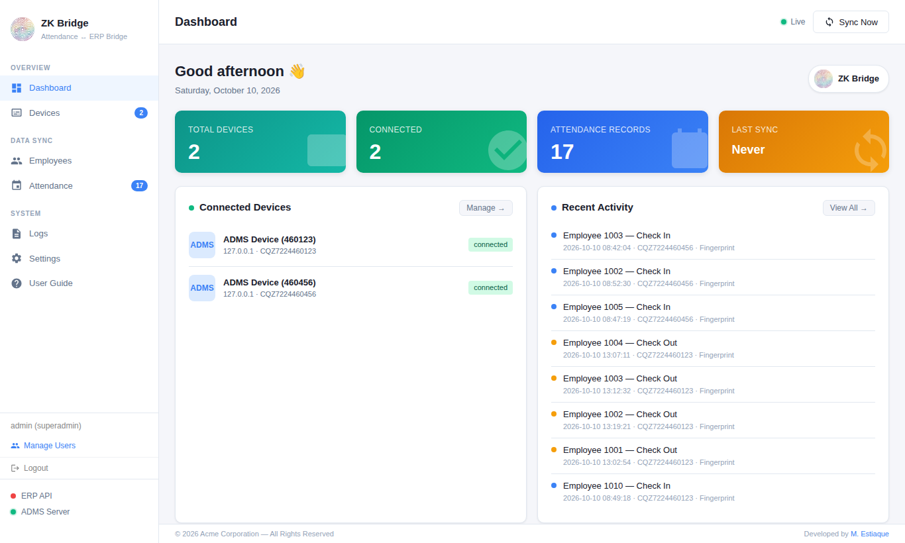
At a glance: number of devices and how many are connected, attendance records collected, the last sync time, connected devices, the latest punches and the sync history. Sync Now (top right) fetches from TCP/IP devices and pushes all new records to your ERP immediately. The status lights at the bottom left show whether the ERP API and the ADMS server are reachable.
Employees
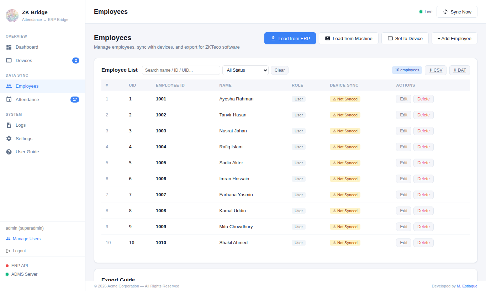
| Button | What it does |
|---|---|
| Load from ERP | Imports the employee list from your ERP's /zk/employees. |
| Load from Machine | Reads the users currently stored on a connected ADMS device. |
| Set to Device | Sends employees that are not on the devices yet (Not Synced) to all connected devices. ADMS devices pick the change up within about 30 seconds. |
| + Add Employee / Edit / Delete | Manage a single employee; the change is sent to connected devices. Fingerprints and faces already enrolled on the device are kept when you edit a name. |
| CSV / DAT | Export for ZKTeco desktop software (CSV) or for USB-drive import on the device (user.dat). |
Enrol fingerprints, faces and cards on the device itself as usual; the bridge manages names, IDs and privileges.
Attendance
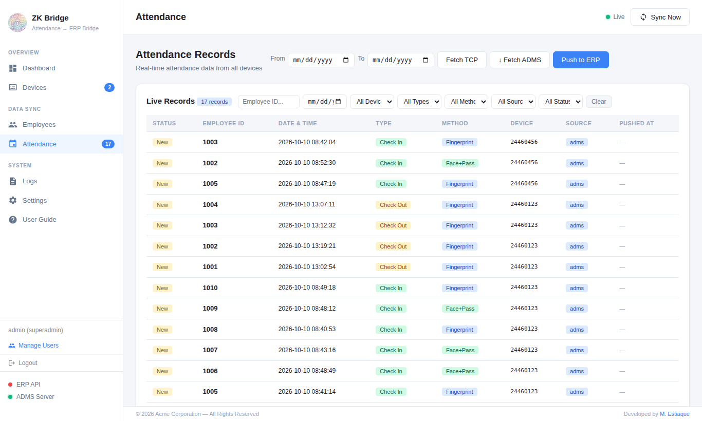
| Button | What it does |
|---|---|
| Fetch TCP | Reads punches from connected TCP/IP devices, optionally limited to the From/To dates. |
| Fetch ADMS | Asks ADMS devices to upload their stored history (useful after first connecting a device that already has punches). |
| Push to ERP | Sends all records with status New to your ERP now. Delivered records show the time in Pushed At. |
Duplicate punches (same employee, time and device) are ignored automatically.
Sync schedule
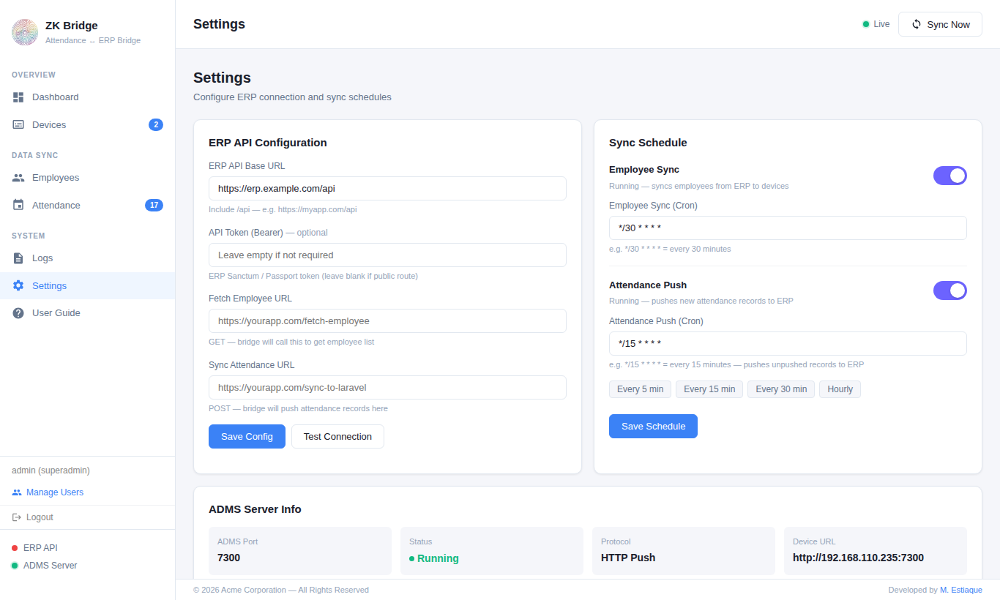
In Settings → Sync Schedule you can turn on two automatic jobs and set how often they run:
- Employee Sync — imports employees from the ERP and sends new ones to the devices.
- Attendance Push — sends new attendance records (from ADMS devices and earlier TCP/IP fetches) to the ERP.
Use the preset buttons, or type a cron expression:
| Expression | Runs |
|---|---|
*/5 * * * * | Every 5 minutes |
*/15 * * * * | Every 15 minutes |
0 * * * * | Every hour, on the hour |
0 6,18 * * * | Every day at 06:00 and 18:00 |
Times use the clock of the computer running ZK Bridge. Changes apply immediately without a restart.
Users, roles & permissions
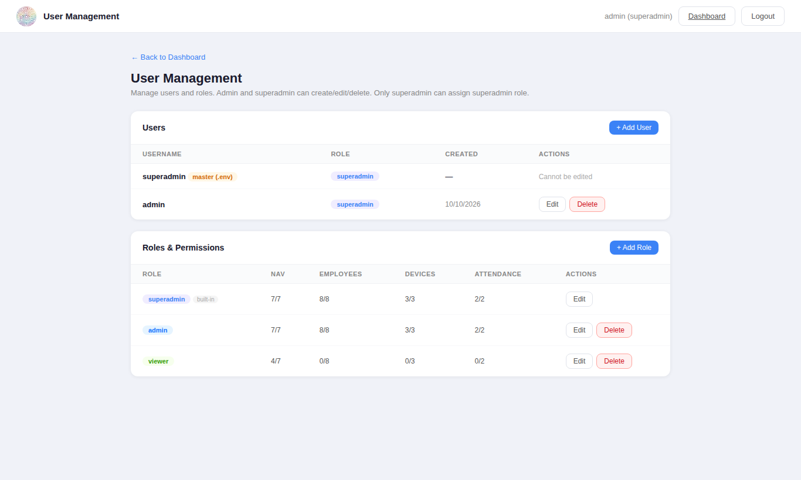
Open Manage Users at the bottom of the sidebar (superadmin only). Three roles are built in:
| Role | Access |
|---|---|
| superadmin | Everything, including users, permissions and branding. Cannot be edited or removed by an admin. |
| admin | Everything in the app except user management, interface permissions and branding. |
| viewer | Read-only: dashboard, employees, attendance and the user guide. |
You can create your own roles and choose exactly which pages and buttons each role may use. Permissions are enforced by the server, not only hidden in the interface.
Security: after 5 wrong passwords for the same account, sign-in from that computer is blocked for 15 minutes. Passwords are stored as bcrypt hashes.
Branding (white-label)
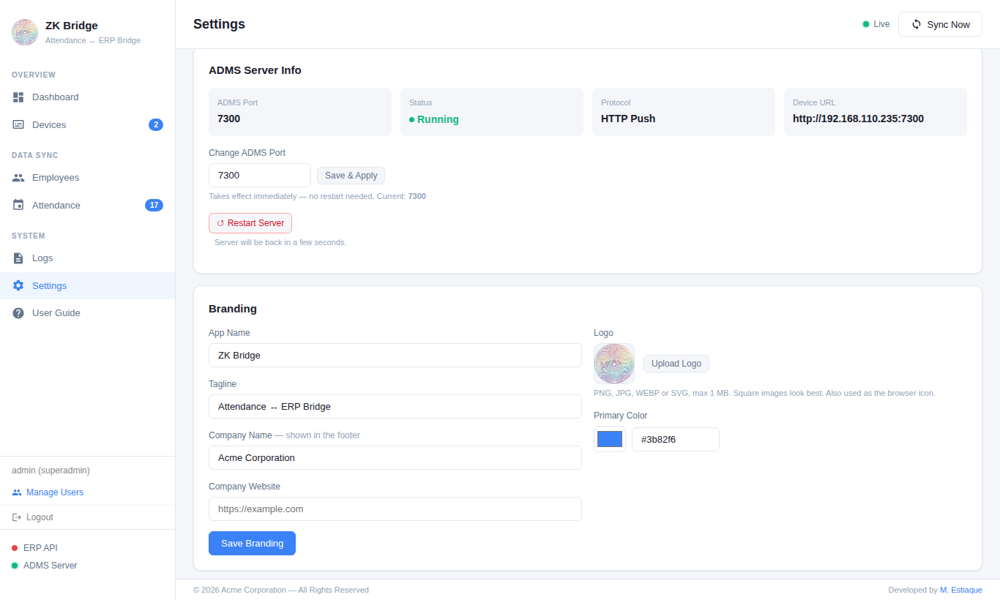
Change how ZK Bridge looks for your users or your clients:
- App name and tagline — shown in the sidebar, login page and browser tab.
- Logo — PNG, JPG, WEBP or SVG up to 1 MB; also used as the browser icon. Use Default restores the original.
- Primary color — buttons, links and highlights.
- Company name and website — shown in the footer.
Logs
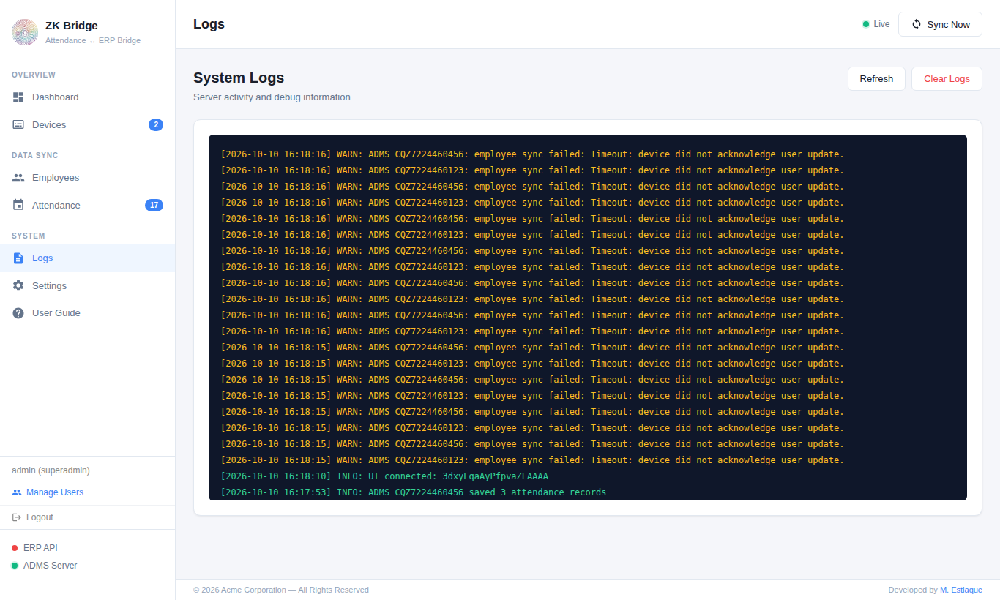
The Logs page shows the latest server messages — device connections, every ADMS request, sync results and errors. It is the first place to look when a device does not appear or a sync fails. Log files are kept in the logs/ folder and rotated automatically (5 × 5 MB).
Configuration (.env)
Most settings are managed from the app. The .env file in the main folder holds the rest; restart ZK Bridge after editing it.
| Key | Default | Description |
|---|---|---|
PORT | 3000 | Web interface port. |
HOST | 0.0.0.0 | Listen address. 127.0.0.1 allows browser access from this computer only (devices use the separate ADMS port). |
ADMS_PORT | 7788 | Port ADMS devices push to. Also editable in Settings. |
LARAVEL_API_URL | — | ERP API base URL (Settings → ERP API Base URL). |
LARAVEL_API_TOKEN | — | Bearer token for the ERP API. |
FETCH_EMPLOYEE_URL | — | Full URL overriding /zk/employees. |
SYNC_ATTENDANCE_URL | — | Full URL overriding /zk/attendance. |
SYNC_SCHEDULE | */30 * * * * | Employee sync schedule (cron). |
ATTENDANCE_FETCH_SCHEDULE | */15 * * * * | Attendance push schedule (cron). |
LOG_LEVEL | info | error, warn, info or debug. |
SESSION_SECRET | random | Signs login sessions. Created automatically; keep it private. |
MASTER_USERNAME / MASTER_PASSWORD | empty | Optional emergency login — see Forgot password. Leave empty in normal use. |
The LARAVEL_ names are kept for compatibility; they work with any ERP.
Where data is stored
| Path | Contents |
|---|---|
.env | Ports, ERP connection, schedules, session secret. |
data/users.json, data/roles.json | User accounts (hashed passwords) and roles. |
data/employees.json | The bridge's employee list. |
data/config.json, data/permissions.json | Schedule switches and interface permissions. |
data/branding.json, data/branding/ | Branding settings and uploaded logo. |
data/installed.json | Marks setup as completed. |
logs/ | Log files. |
Back up .env and the data/ folder regularly; together they are a complete backup of your installation.
Updating
- Stop ZK Bridge (
stop.bat/./stop.sh), or stop the service. - Back up
.envand thedata/folder. - Extract the new version over the old folder. Your
.envanddata/are not part of the package, so they are kept. - Run
npm install, then start ZK Bridge again (or start the service).
Troubleshooting & FAQ
The device does not appear on the Devices page
- Check the server address on the device is the computer's LAN IP (not
localhost) and the port matches Settings → ADMS Port. - Allow the ADMS port in the firewall.
- From the Devices page, ping the device's IP. If the ping fails, the device and computer are not on a reachable network.
- Restart the device after changing its settings, then watch the Logs page for an
ADMS handshakeline.
“Port 3000 is already in use”
Another program (or a second copy of ZK Bridge) uses the port. Stop it, or set a different PORT in .env.
Test Connection to the ERP fails
- Open
<base URL>/zk/pingin a browser on the same computer to check it is reachable. 401/403: the API token is wrong or missing.404: the base URL or route is wrong (remember to include/apiif your routes use it).- HTTPS errors: make sure the ERP has a valid SSL certificate.
Attendance is collected but not in the ERP
Check that Attendance Push is enabled in Settings, then click Push to ERP on the Attendance page and look at the message and the Logs page. Records stay New until your endpoint returns a 2xx status.
Employee names do not change on the device
ADMS devices apply changes on their next check-in (up to about 30 seconds). Use Load from Machine afterwards to confirm.
I forgot the admin password
- Add to
.env:MASTER_USERNAME=recoveryandMASTER_PASSWORD=followed by a strong temporary password. - Restart ZK Bridge and sign in with these details (they always have superadmin access).
- Reset the password in Manage Users, then remove both lines from
.envand restart.
Can I run the bridge on the same server as my ERP?
Yes, if the devices can reach that server's ADMS port (directly or over a VPN). Most installations run the bridge on a PC in the office instead, so devices never need to be exposed to the internet.
How many devices are supported?
There is no fixed limit. A typical office PC handles dozens of devices comfortably.
Can I start over with a fresh setup?
Stop ZK Bridge, delete the data/ folder (and .env if you also want to reset ports and ERP settings), then run npm install and start it again. The setup wizard will appear.
Changelog
Version 1.0.0 — initial release
- ADMS push server and TCP/IP device connector
- Employee sync from ERP to devices and attendance push to ERP, on demand or on a schedule
- Browser-based setup wizard
- Users, custom roles and server-enforced permissions
- White-label branding
- Windows service and systemd installers
Credits
ZK Bridge is built with these open-source packages. Thank you to their authors.
| Package | License | Package | License |
|---|---|---|---|
| Express | MIT | Socket.IO | MIT |
| express-session | MIT | memorystore | MIT |
| axios | MIT | bcryptjs | BSD-3-Clause |
| dotenv | BSD-2-Clause | node-cron | ISC |
| winston | MIT | node-windows (WinSW) | MIT |
ZKTeco is a trademark of ZKTeco Co., Ltd. ZK Bridge is an independent product and is not affiliated with or endorsed by ZKTeco.
Support
If you need help, please contact me through my CodeCanyon profile page or at mestiaque.com. To get an answer quickly, include:
- Your operating system and Node.js version (
node -v) - Your device model and firmware version
- What you did, what you expected, and what happened
- The relevant lines from the Logs page
Support covers installation, configuration and bugs. Customisation and integration work for a specific ERP can be quoted separately.